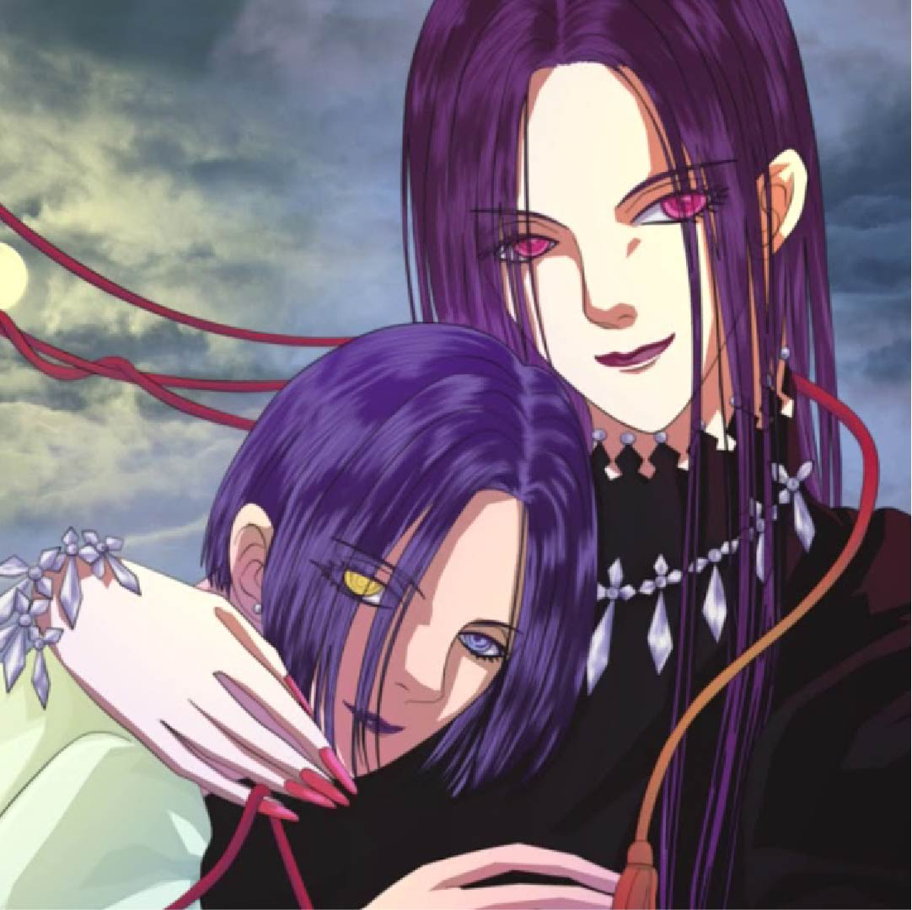

Эпоха «Тайсё» была полна неожиданностей. Много легенд нашли свое логическое подтверждение в те года. Люди давненько стали думать о присутствии демонов в гущах леса. И эти существа были крайне опасны и кровожадны. В ночное время суток они вели охоту на людей, убивая невинных граждан, демоны питались их плотью. Однако со временем эти легенды стали больше напоминать сказки. Подобных инцидентов в лесах не происходило, люди перестали верить. И было это зря, ведь несколько лет назад с отцом главного героя – Танджиро Камадо случилась неприятность.
Тот пропал при странных обстоятельствах, а юноша взвалил на себя ответственность за семью. Когда Танджиро отправился продавать уголь, он не думал, что при возвращении домой застанет кровавую картину. Его родственники были убиты. Семья растерзана, и везде по дому виднеются следы крови. Единственный человек оставшийся в живых – сестренка главного героя. Она рассказала о демонах пришедших из леса в их дом. Оказалось, что девушка была ими обращена и скоро может стать убийцей.
В один ужасный день всему человечеству пришёл конец, ведь на небе появился мистический разлом. В момент появления неизвестного феномена все люди начали превращаться в каменные статуи от зелёных лучей. Никто не успел понять, что происходит вокруг. Прошло около трёх тысячелетий после ужасного случая и мир превратился в доисторический. Все здания были покрыты лианами, и город стал копией настоящих джунглей. Тайджи Оки пробудился от каменного сна и обнаружил вокруг себя лишь статуи. Парень имеет крепкое тело и слабые познания в науке, но он не впал в уныние и начал поиски оживших людей. Ему крупно повезло, ведь вскоре юноша встретил своего лучшего друга Сэнку Ишигами, который пробудился на полгода раньше. Подросток обладал уникальным мышлением и огромными знаниями, а потому от момента пробуждение преуспел в своих исследованиях. Он не только построил дом на дереве, но и создал примитивную лабораторию, в которой трудится каждый день. Ребята объединили силы, чтобы найти способ оживить всё окаменевшее человечество
Создать крепкие и взаимные отношения подросткам очень тяжело, но всё ещё более усложняется, когда один из партнёров является настоящим отаку. Наруми Момосэ всегда была заядлой яойшницей, и она много времени проводит за чтением манги. Девушка вечно играет в симулятор свиданий, а также обожает слушать идолов. Такое увлечение взрослой барышни непонятно для окружающих, а потому Наруми до этих пор страдает от одиночества. Она пытается меньше говорить о своей личной жизни подругам и сотрудникам. Вскоре нынешняя работа ей наскучила, и она решает поменять её. Этот поступок стал судьбоносным, ведь на новом рабочем месте Момосэ познакомилась с Хиротакой Нифуджи. Оказалось, что мужчина был одноклассником симпатичной девушки и теперь он будет её коллегой. Хиротаку имеет секрет, и мужчина является таким же отаку как его новая сотрудница. Нифуджи просиживает время не за мангой, а проводит досуг, играя в игры в жанре аниме. Между молодыми людьми пролетела искра и после этого коллеги начали часто общаться. Ребята ведут себя, словно подростки, и им придётся научиться правильно строить серьёзные отношения.
В этом мире живут необычные жители, ведь все они антропоморфные животные. Казалось бы, что они не имеют разума и ведут себя примитивно, но это совсем не так. У этой необычной нации существуют жесткие законы и правила, которые следует соблюдать. Хищники и травоядные научились сосуществовать вместе, но не все рады такому соседству. Члены этого общества ничем не отличаются от человеческого, а потому они также ходят в школу и имеют аналогичные заведения как у людей. Серый волк по имени Легоси обучается в старшей школе, и он немного отличается от своих собратьев. Школьник никогда не проявляет агрессивность, а также он не пытается запугивать сверстников. Внешний вид Легоси полная противоположность его взглядам и душевному состоянию. Недавно школьник вступил в драмкружок, где ему удалось найти много друзей, но все они травоядные. В один злополучный день на территории учебного заведения произошло убийство, и теперь друзья с опаской относятся к новому члену драмкружка. Подобных инцидентов в школе давно не происходило, а потому руководство обеспокоено этим вопиющим случаем. Не самое подходящее время для любовных отношений, но Легоси очень понравилась одноклассница, которая принадлежит другому биологическому виду.
Обычный ученик средней школы Фуджита Татара, как и большинство его сверстников, не задумывался о своей цели в жизни, а просто лениво проживал день за днём. Как-то раз на улице он ввязался в драку, и ему на помощь пришёл загадочный человек. После этого, к удивлению Татару, этот человек отвел его в танцевальный класс. Пока он с восхищением наблюдал за Ханаокой Шидзуку - танцовщицей, которая занималась там, и её партнёром, гениальным танцором Хёдо Киёхару, к нему вдруг пришло осознание: танцы - вот чему он хочет посвятить свою жизнь.
Несколько лет назад группа нечеловечески сильных рыцарей-преступников, известных как «Семь Смертных Грехов», предприняли попытку государственного переворота, но потерпели поражение – так называемое «Святое рыцарство» поставило их на место и сохранило в стране порядок. По крайней мере, такова официальная версия событий недавней истории. У принцессы Элизабет, дочери только что свергнутого с престола короля, иной взгляд на вещи: Святые рыцари используют добытую длительными тренировками легендарную силу, чтобы тиранить простой народ, и теперь, когда король уже не в силах их обуздать, они окунут всю страну в пучину хаоса и отчаяния.
Впрочем, думает Элизабет, еще есть шанс на спасение: поскольку только Семь Смертных Грехов осмеливались бросить вызов Святому рыцарству, нужно найти их и уговорить восстановить естественный порядок вещей. Надев ржавые доспехи, принцесса инкогнито отправилась на поиски опальных рыцарей, и вскоре судьба ей улыбнулась: хозяин трактира «Шляпа кабана», безобидный на вид юноша, оказался Мелиодасом – капитаном Семи Смертных Грехов, разыскивающим собратьев по какому-то важному делу. Выслушав Элизабет, он пригласил ее с собой – так началось долгое и славное путешествие, о котором когда-нибудь будут слагать песни и легенды.
На первый взгляд может показаться, что Хори — обыкновенная девушка-подросток, но внешность бывает обманчива. В то время, как родители трудятся на работе, героине остаются все хлопоты по дому, а также забота о младшем брате. Из-за постоянной занятости у неё просто не остаётся времени на то, чтобы насладиться прелестями подростковой жизни. Вскоре она знакомится с Миямурой, который также не показывает в школе настоящего себя. Он кажется недружелюбным тихоней, но за пределами стен школы оказывается абсолютно другим человеком. Так, у этой парочки находится много общего, и постепенно они начинают сближаться.
Один день изменил жизнь доктора Кэндзо Тэммы, гениального японского хирурга, прибывшего в Германию для работы в госпитале «Эйслер Мемориал». В этот день он понял, что человеческие жизни равноценны, и что сама человеческая жизнь стоит больше, чем выгода, которую можно получить за её спасение. В этот день он спас мальчика, получившего огнестрельное ранение в голову во время убийства его родителей. Через некоторое время произошло ещё три убийства, и доктор Темма стал главой хирургического отделения госпиталя. В суматохе этих дней выживший после великолепной операции, проведённой нашим Айболитом, мальчик и его сестра-близнец бесследно исчезли из больницы. Прошло девять лет и убийства в Дюссельдорфе начались вновь. Монстр появился в городе. И в жизни Теммы, чтобы в один дождливый вечер сказать: «Ты - тот, кто вернул меня к жизни, доктор…»

Где-то в Китайском квартале обычного американского города притаился маленький зоомагазин. Его владелец — эксцентричный и таинственный граф Ди — продает в нем необычных животных. Уверяя, что предлагает посетителям «грезы и любовь», он снабжает питомцев контрактом, нарушение которого грозит покупателю неприятными последствиями… Но кто из тех, кто заглядывает в лавку к графу Ди, представляет себе, насколько неожиданными и страшными эти последствия могут быть на самом деле?
В вагоне одного поезда, следовавшего в Токио, Нана Комацу, ехавшая к своему парню Сёдзи, случайно оказалась в кресле рядом с Наной Осаки, направлявшейся в столицу, чтобы исполнить свое желание — стать известной певицей. Будучи солисткой панк-группы «Blast», Нана мечтает о дебюте своей группы в Токио, чтобы доказать себе, всему миру и своему парню Рэну, гитаристу популярной группы «Trapnest», что она самостоятельно может добиться успеха.
Будучи тёзками, девушки быстро находят общий язык, даже несмотря на противоположность характеров. Однако, увидев Сёдзи уже в Токио, Нана Комацу теряет из виду другую Нану: случайное знакомство в поезде подошло к концу. Но судьба сводит их снова, когда они сталкиваются в квартире, которую обе хотели снять. Слово за слово, они решают жить вместе. Ещё бы: ведь и без того низкая плата за квартиру станет в два раза ниже! Так и начинаются жизненные приключения двух девушек с одним именем, вместе идущих навстречу своим мечтам.
Подняться НАВЕРХ